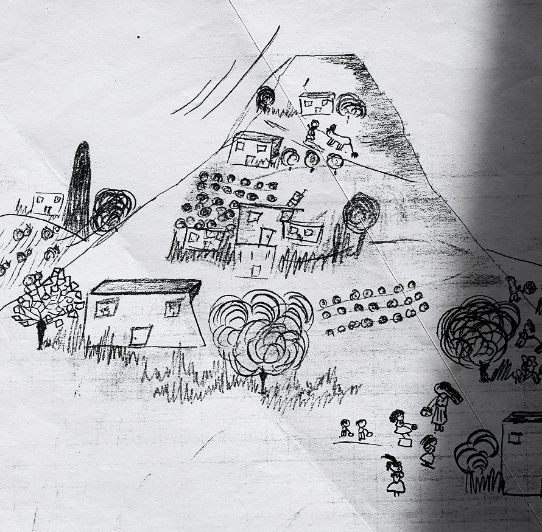

Мне все говорили, что ездить из Реховота на работу в Иерусалим будет мне слишком тяжело и одна из сотрудниц ( Ольга Малер) предложила мне свою помощь. Она жила в Текоа в 16 км к югу от Иерусалима. Ольга предложила нам 2 комнаты.
Нас не смущало совместное проживание с ней, да и цена была для нас приемлемой. Вот тут первый, кажется и единственный раз моя мама осторожно сказала: « может нам не стоило сюда приезжать.» Было не очень понятно, что она имеет ввиду - Текоа или может быть Израиль.
Да и правда, было отчего задуматься. Я ведь даже предварительно не съездила посмотреть. Текоа - еврейское поселение, тогда ещё очень маленькое на небольшой горке среди арабских деревень.

placeholder
Из этих деревень ранним утром доносится голос муэдзина, многократно усиленный мощными звуковыми усилителями. Дом был ещё не достроен. Ни в одной комнате, ни в туалете, ни в ванной, ни на кухне не было дверей. Ступеньки к дому тоже не очень надежные. На участке перед домом строительный мусор.
Зима в тот год выдалась холодной, несколько раз даже выпадал снег. Маша в школе, я - на работе, там тепло. А мама целый день дома, в доме температура - 13 градусов. Но ни разу мама не пожаловалась. Уж как она справлялась, даже и не знаю. Оденется потеплее и за дела. Даже Ольге пыталась помочь, чем могла.
Со временем я поняла, что еврейское поселение на, так называемых территориях, не подходящее место для старых и малых.
placeholder